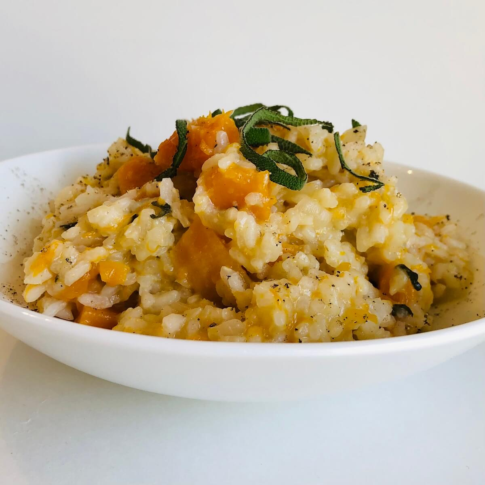

Butternut Squash Risotto

Description
This butternut squash risotto is creamy, comforting, and delicious! Filled with cozy autumn flavor, it's a perfect recipe for a fall dinner party or date night.
Ingredients
- 1 tablespoon olive oil
- 1 medium onion, chopped
- 1/2 teaspoon sea salt, plus more to taste
- Freshly ground black pepper
- 2 cups cubed butternut squash, ¼-inch cubes
- 2 garlic cloves, finely chopped
- 1 teaspoon minced rosemary or sage
- 1 cup uncooked Arborio rice
- ½ cup dry white wine
- 4 cups warmed vegetable broth
- Chopped parsley or small sage leaves, optional, for garnish
- ½ cup grated pecorino or Parmesan cheese, optional, for serving
Steps
- In a large skillet, heat the oil over medium heat. Add the onion, salt and several grinds of pepper, and cook for 2 to 3 minutes. Add the butternut squash and cook for 6 to 8 minutes.
- Add the garlic, rosemary, and the rice. Stir and let cook for about 1 minute then add the wine. Stir and cook for 1 to 3 minutes, or until the wine cooks down.
- Add the broth, ¾ cup at a time, and stir continuously to allow each addition of broth to be absorbed before adding the next. Cook until the butternut squash is tender, and the risotto is soft and creamy. Season to taste.
- Garnish with parsley or sage leaves and serve with grated cheese, if desired.
Home